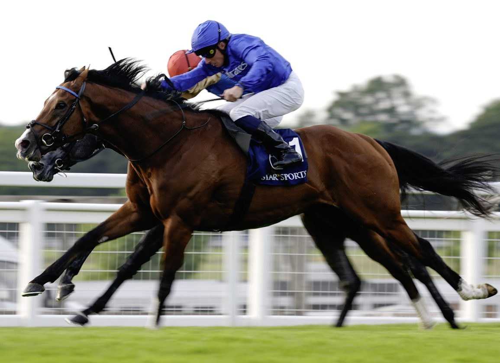

Ombudsman gana el Brigadier Gerard Stakes y prepara el asalto al Prince of Wales's

El triple ganador de Grupo 1 Ombudsman se llevó este jueves el Star Sports Brigadier Gerard Stakes (Grupo 3) del hipódromo de Sandown Park, donde aguantó con autoridad el reto del segundo, Gethin, por un cuello en el remate. El ejemplar del equipo de John y Thady Gosden, montado por William Buick, partía como…
El triple ganador de Grupo 1 Ombudsman se llevó este jueves el Star Sports Brigadier Gerard Stakes (Grupo 3) del hipódromo de Sandown Park, donde aguantó con autoridad el reto del segundo, Gethin, por un cuello en el remate. El ejemplar del equipo de John y Thady Gosden, montado por William Buick, partía como favorito a 2-5 en la cotización y respondió al guion con un triunfo de oficio sobre el césped del recorrido de la milla y un cuarto.
La victoria llega como redención para el campeón del año pasado, derrotado en 2025 en esta misma carrera por Almaqam cuando portaba la penalización por su condición de Grupo 1. Buick le pidió la respuesta en la recta final y Gethin, segundo, le aguantó la mirada hasta la misma línea de meta sin lograr sobrepasarle, en un cierre apretado típico de la categoría.
El resultado coloca a Ombudsman en la rampa de salida hacia el Prince of Wales's Stakes de Royal Ascot, donde se enfrentará al héroe del último Arc de Triomphe, Daryz, en un cara a cara largamente esperado por el sector. La cuadra Gosden mantiene así viva la racha del ejemplar en la temporada y refuerza su condición de uno de los caballos en activo más en forma del calendario británico.
— Redacción de Galope al Día